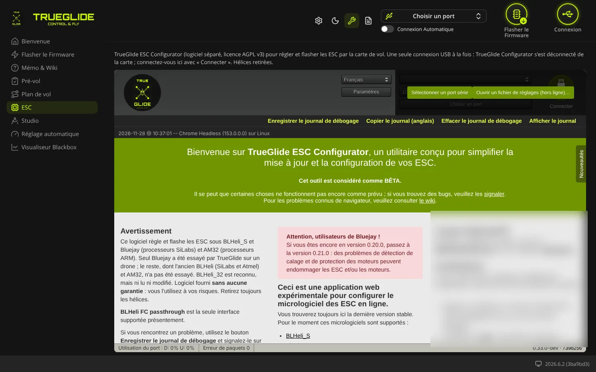
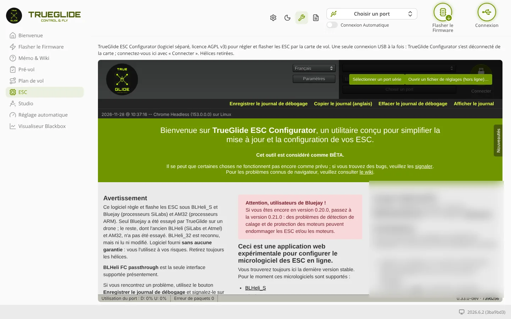

TRUE
TRUEESC
L'onglet ESC (groupe « Installation du drone ») sert à régler et à flasher les ESC Bluejay, BLHeli_S et AM32 par la carte de vol, sans quitter le logiciel. Il affiche TRUEGLIDE ESC CONFIGURATOR, un logiciel séparé et libre (licence AGPL v3), dans une version figée.


Comment ça marche
La carte de vol sert de pont entre l'ordinateur et les ESC (« passthrough »). Une seule connexion USB est possible à la fois :
- en entrant dans l'onglet, TRUEGLIDE CONFIGURATOR se déconnecte de la carte ;
- dans l'onglet, on se connecte à la carte avec le bouton Connecter de TRUEGLIDE ESC CONFIGURATOR ;
- en quittant l'onglet, le logiciel lui demande de libérer le port USB. Pendant une lecture, une écriture ou un flash, il refuse de partir et affiche « Opération en cours sur les ESC, patientez avant de quitter l'onglet ESC. »
L'onglet charge une version figée de TRUEGLIDE ESC CONFIGURATOR : elle ne change pas tant qu'une nouvelle version du logiciel ne la remplace pas. Le même logiciel a aussi sa page à part : TrueGlide ESC Configurator.
Régler ou flasher les ESC
- Retirer les hélices.
- Brancher la carte de vol en USB, puis la batterie : les ESC doivent être alimentés pour répondre.
- Ouvrir l'onglet ESC, choisir le port série, puis Connecter.
- Lire les réglages des ESC, les modifier puis les écrire, ou flasher un firmware d'ESC.
- Quitter l'onglet une fois l'opération finie : le port est libéré, et TRUEGLIDE CONFIGURATOR peut se reconnecter à la carte.
Sans carte branchée, le bouton Ouvrir un fichier de réglages (hors ligne) ouvre un fichier de réglages d'ESC enregistré sur l'ordinateur.
État des essais
Le cadre rouge de l'onglet avertit aussi les utilisateurs de Bluejay 0.20.0 : passer à la version 0.21.0, à cause de problèmes de détection de calage et de protection des moteurs dans la version 0.20.0.
Lien avec l'onglet Moteurs
L'onglet Moteurs règle le protocole entre la carte et les ESC (DShot, DShot bidirectionnel…). L'onglet ESC règle les ESC eux-mêmes : sens de rotation, firmware, réglages propres à chaque ESC.